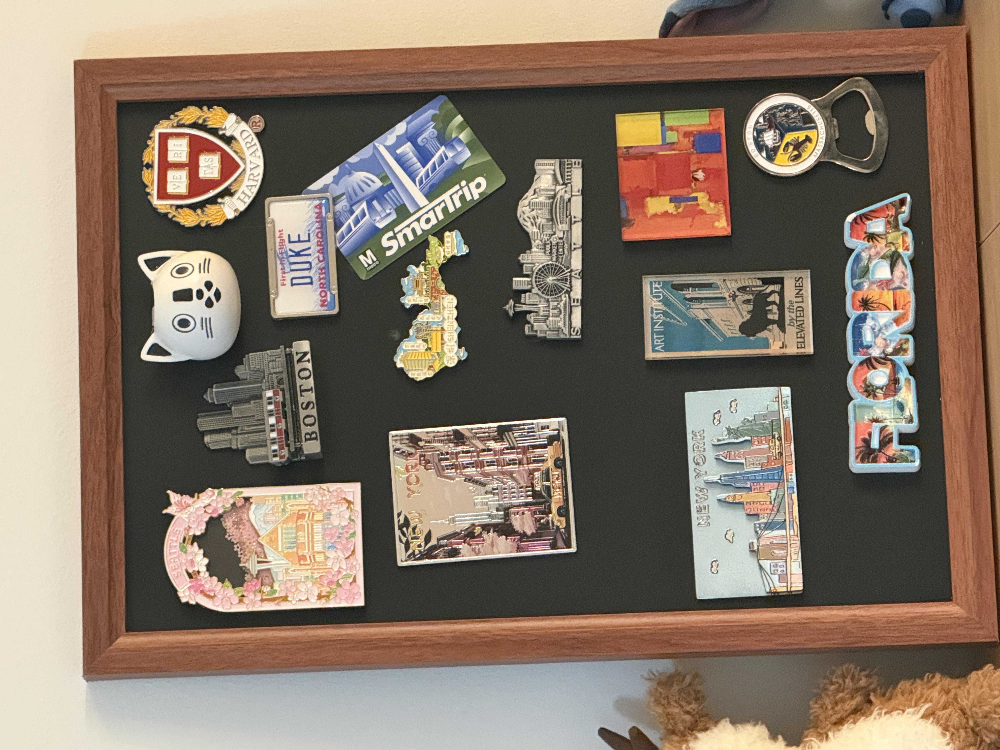

TWO SIDES. ONE YING.
Hi, I'm
A little of both.
Data, decisions, and the places in between.
Choose a side. You can always wander back.MADE OF CURIOSITY
01 / THE PROFESSIONAL SIDE
From data
to decisions.
A look at the work behind the way I think.
LinkedIn 摘要 · 职责与成果待确认
02 / IDEAS INTO PRACTICE
Curiosity,
applied.
Questions worth asking.
Problems worth working through.
项目来自 LinkedIn 索引，待核实和精简
03 / WHERE IT BEGAN
Always a
student.
The foundations.
And an appetite to keep learning.
THE PERSONAL SIDE / A COLLECTION OF LITTLE THINGS
Places I've been.
Pieces I've kept.
Every little magnet has a story.
Pick one. I'll show you around.
点击照片上的标签，打开旅行手记草图
